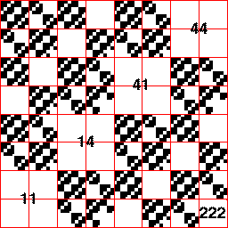

Third Homework Set Answers
2(c) From the graph we see the forbidden combinations are
1 → 1,
1 → 4,
4 → 1,
and
4 → 4.
THe empty length 2 addresses are 11, 14, 41, and 44
Note that the length 3 square 222 is empty.
This means the combination
2 → 2 → 2
is forbidden. This is not a consequence of the any of the forbidden pairs.

Return to
Homework 3 Practice
.